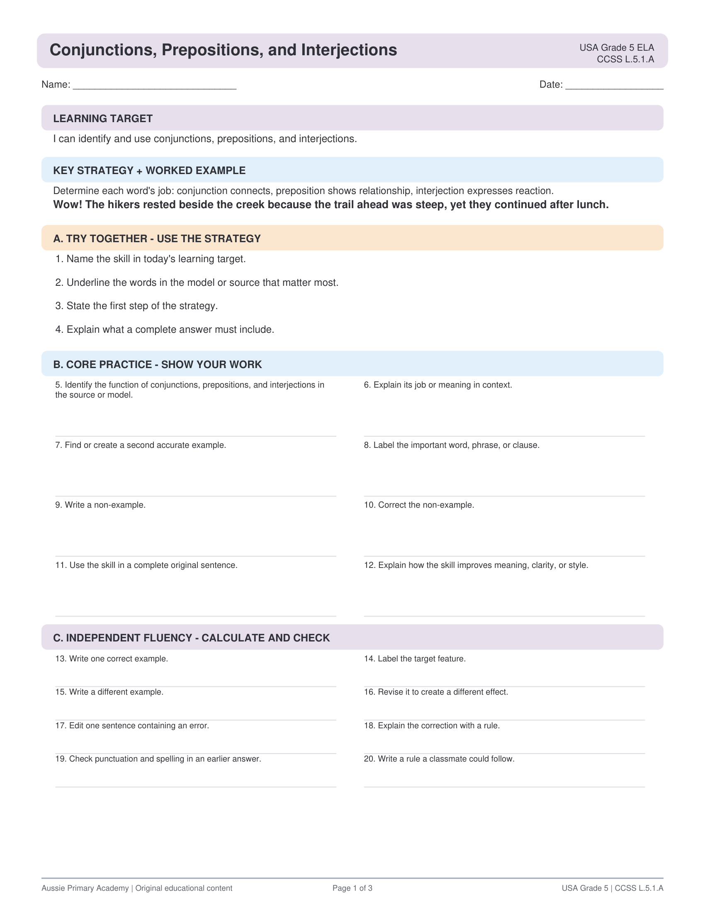

What's Included
- Conjunction identification
- Preposition practice
- Interjection recognition
- Teacher answer key
USA Grade 5 · ELA
Help Grade 5 students explain the function of conjunctions, prepositions and interjections — free printable PDF with answer key.

Supports CCSS L.5.1.A — Explain the function of conjunctions, prepositions, and interjections in general and their function in particular sentences.
Yes. Download and print free for classroom and home use.
Yes. The PDF includes a teacher answer key.
Yes. Use Fit to printable area. Also works on A4.